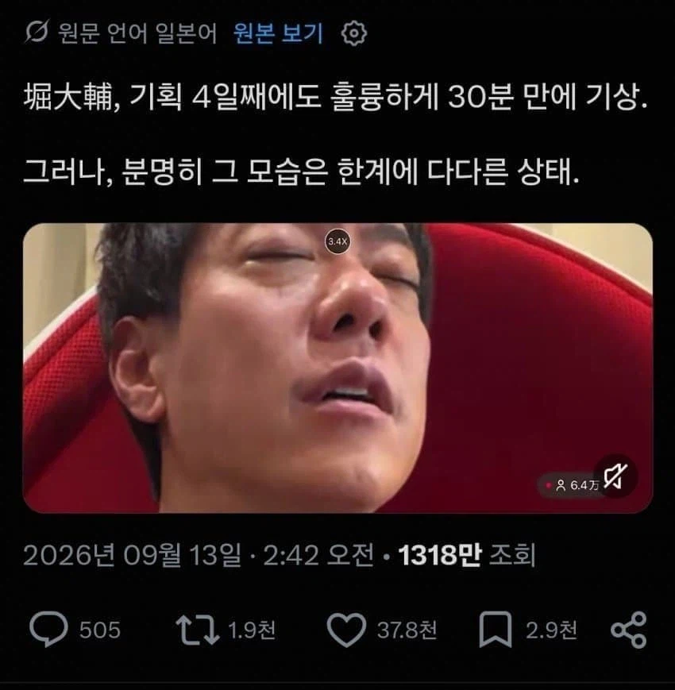

https://bbs.ruliweb.com/best/board/300143/read/76668211

하루 수면 30분이면 된다고 인증방송켜서
30분 자고 23시간 30분동안 조는 중 ㅋㅋㅋ
https://bbs.ruliweb.com/best/board/300143/read/76668211

하루 수면 30분이면 된다고 인증방송켜서
30분 자고 23시간 30분동안 조는 중 ㅋㅋㅋ
6시간만 자도 하루죙일 피곤한데...7시간이 마지노선임...
커피마시면 잠은 안와서 뭘 할순 있는데
컨디션은 여전히 바닥임 ㅋㅋ 그냥 좀비임
이거 나네. 육아 하느라 벌써 2,3년은 이꼴
2시간은 버틸만함
근데 주말에 몰아잠ㅋㅋ
병신 ㅋㅋ
숏슬리퍼도 평균 4시간자야함ㅋㅋㅋㅋ
치매걸린다 등신아....에휴
하루이틀은 정신력으로 버텨도 삼일째부턴 정신반쯤 풀려있게되있음ㅋ
잠은 무조건 7시간 이상은 자야 함..
2년 동안 6시간 수면했었는데 진짜 걍 좀비임ㅠㅠ
하루 4~5시간만 자도 된다는 놈들 보면
밤에 조금 자고 낮에 많이 졸더라
내가예전에 극한상황에서 저렇게 하루30분~1시간 정도 잔적잇엇는데 ... 몇일하니까 맨날심장두근거리고 하품을 너무해서 턱이빠짐ㅋㅋㅋㅋ 절대사람할짓아닌데 걍 미친거같다
아 낮잠 30분 자라는게 아니고 하루에 30분만 자면 된다고? ㅋㅋㅋㅋㅋㅋㅋㅋㅋ
그냥 자라ㅋㅋㅋ
그냥 클린턴처럼 틈 날 때 마다 10~30분씩 계속 자라고 ㅋㅋㅋㅋㅋ
저러면 신체가 회복을 못해서 암 발병율 압도적으로 올라갈텐데..
요즘 느끼는게 5시간자면 일할때 비몽사몽 해서 좀 위험하더라
치매걸린다
이런 쪽에 이상하게 집착하는 사람 진짜 많음...
어깨는 쓸수록 강해진다 파인가
7시간은 자줘야함
30분? 지랄마셈